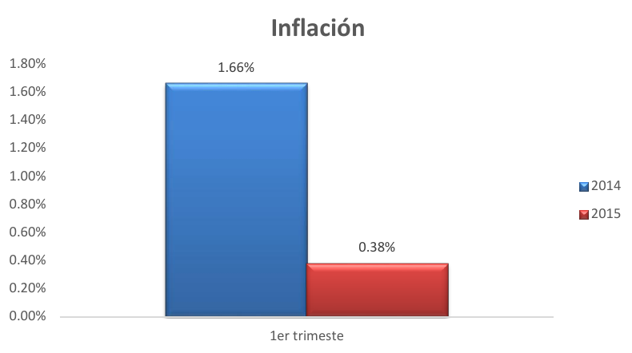
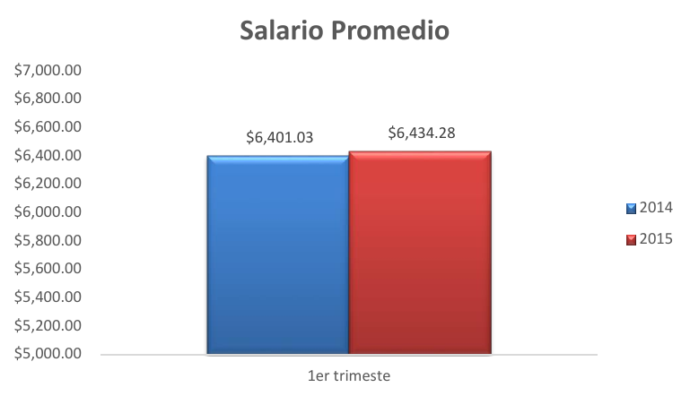
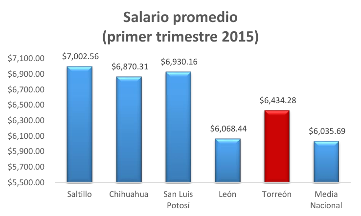
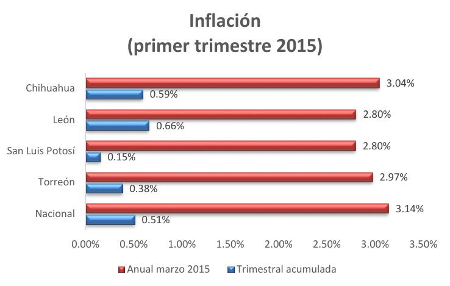
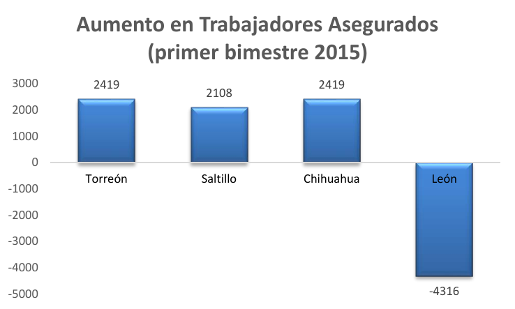

Los indicadores de inflación, apertura de empresas, trabajadores asegurados y salario promedio, para el municipio de Torreón muestran una tendencia positiva en sus resultados del primer trimestre de 2015 respecto al mismo periodo del 2014.
Inflación
La inflación anual a marzo de 2015 fue de 2.97% en Torreón, mientras que a nivel nacional fue de 3.14%.
La variación porcentual en el Índice Nacional de Precios al Consumidor (INPC) en Torreón fue de 0.38% en el primer trimestre de 2015, menor a la inflación acumulada durante el primer trimestre de 2014.

FUENTE: INEGI
Trabajadores asegurados
Entre febrero de 2014 y febrero de 2015 los trabajadores asegurados en el Instituto Mexicano del Seguro Social (IMSS) aumentaron en 8,944, significando un aumento de 5.5%. Tan solo durante el primer bimestre de éste año se registraron 2,419 empleos formales, mientras que en enero y febrero de 2014 se registraron 950.

FUENTE: Instituto Mexicano del Seguro Social
Nuevas Empresas
Durante el primer trimestre de 2015 se abrieron 544 nuevas empresas, más del doble de las 266 registradas en el primer trimestre de 2014.

FUENTE: Dirección General de Desarrollo Económico. Ventanilla Universal
Salarios
El salario promedio del municipio de Torreón se mantuvo por encima de $ 6,400 y superior a la media nacional de $ 6,035.69 en 2015.

FUENTE: Encuesta Nacional de Ocupación y Empleo de INEGI
NOTA(S): Salario promedio mensual para personal ocupado de jornada laboral de 35 a 48 horas semanales
Tanto el aumento en las empresas registradas como el aumento en empleos formales hablan de un mayor dinamismo en la economía local, lo que a su vez influye en el aumento de precios y salarios.
Para tener una idea mejor del desempeño de Torreón, comparamos al municipio con la media nacional y ciudades con características similares y encontramos:
- Torreón tiene un salario promedio superior a la media nacional y menor al de las ciudades de Saltillo, Chihuahua y San Luis Potosí debido a un pequeño aumento en el promedio de Torreón contra aumentos más considerables en otras ciudades durante el último trimestre.

FUENTE: Encuesta Nacional de Ocupación y Empleo de INEGI
NOTA(S): Salario promedio mensual para personal ocupado de jornada laboral de 35 a 48 horas semanales
- La inflación acumulada de nuestro municipio fue menor a la nacional y a la de ciudades como Chihuahua y León.
- La inflación anual de Torreón fue menor a la nacional y menor a la de Chihuahua, aunque mayor a la de León y San Luis Potosí.

FUENTE: INEGI
- En Torreón se generaron tantos empleos como en Chihuahua y más empleos que en las ciudades de Saltillo y León, esta última habiendo tenido resultados negativos.

FUENTE: Instituto Mexicano del Seguro Social
NOTA: Datos no disponibles para el municipio de S.L.P.